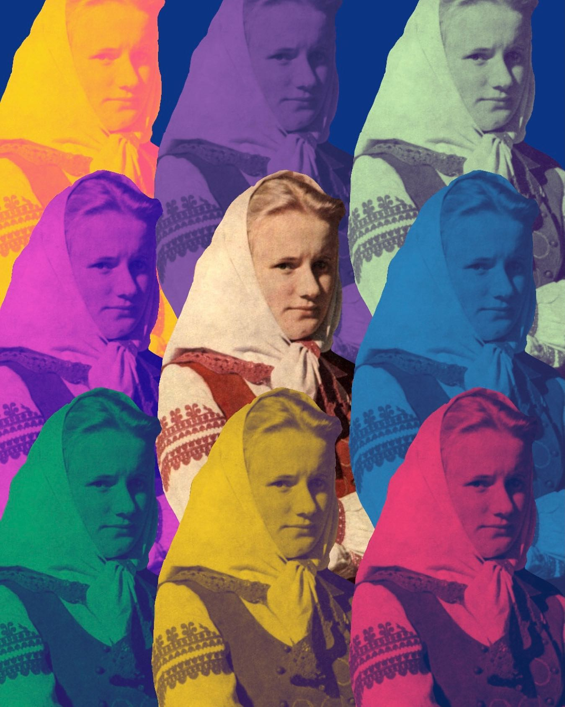
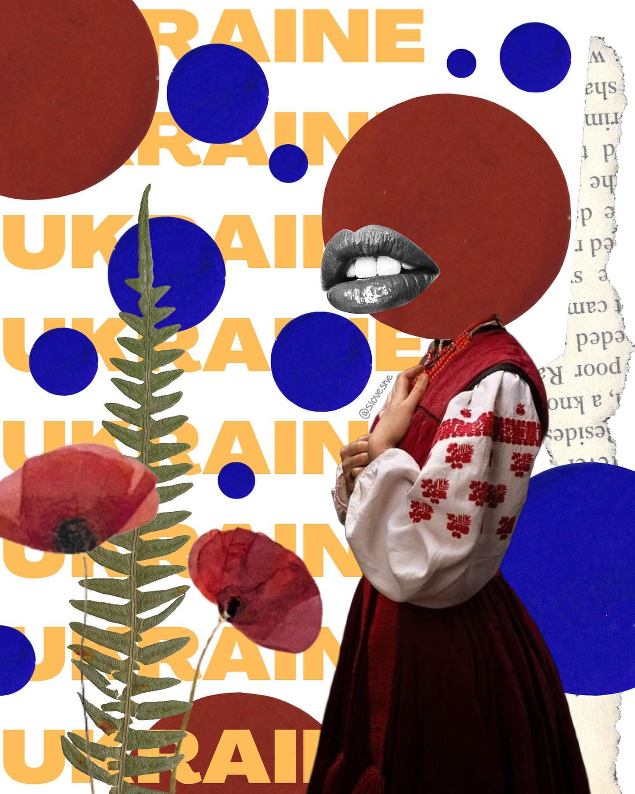
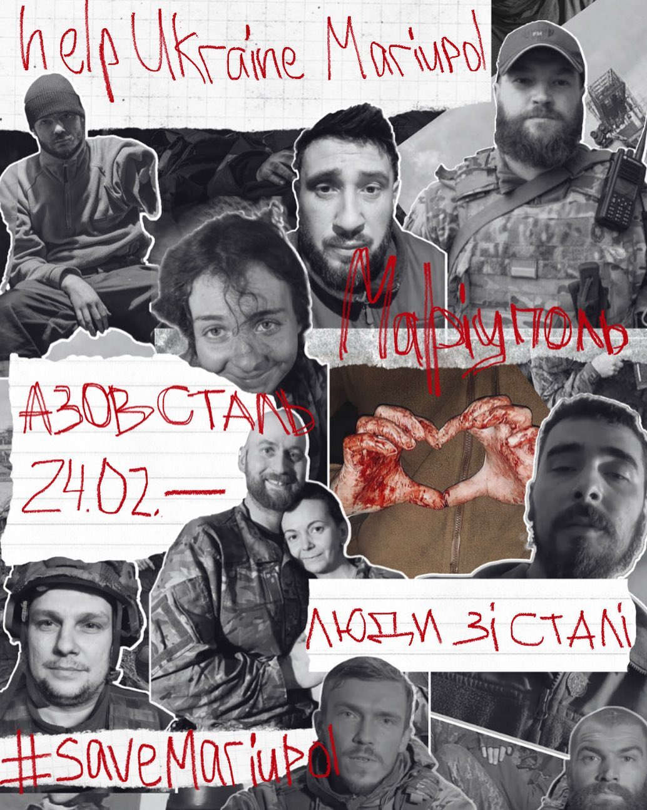

SMM manager
Farbota Victoria
Graphic Designer
Ternopil, Buchach




Про спеціаліста з просування в соціальних мережах, найбільше розкажуть його соціальні мережі☺, посиланняна на мої знаходяться нижче, тут зібрано лише декілька моїх робіт, більше можна знайти в моєму instagram та pinterest, малюю на графічному планшеті, надихаюсь: рішучістю Чорновола, мужністю Стуса, правдивістю Скрябіна, твердотою Шухевич, відчуттями Параджанова, ніжністю Костенко, словотворенням Хвильового та іншою українською літературою, музикою та історією, місце сили - гори